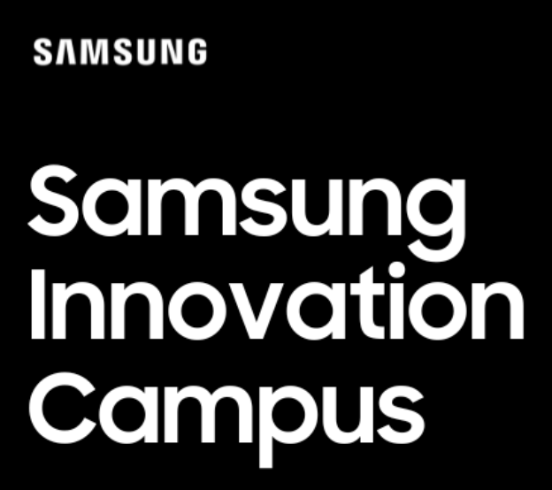

About
I'm a data scientist and cybersecurity expert with a keen interest in cutting-edge technologies, including deep learning, computer vision, reinforcement learning, penetration testing, distributed computing and software development.
Data Scientist - Penetration Tester - Developer
- Age: 26
- Nationality: Italy
- Languages:
- Italian: Native
- English: B2 (IELTS certification)
- Current job: Target Reply
- Email: margiovanni19@gmail.com
- Degree:
- Bachelor's degree in Computer Science
- Master degree in Data Science (AI) and Cybersecurity
Computer science is not my sole area of interest; I'm also fascinated by physics, particularly the laws that govern quantum physics, space exploration and anomaly detection strategies.
Facts
Web sites
Projects
Automatization projects
ML/Deep/Reinforcement Learning Projects
Skills
Useful skills that I have obtained during my academic studies and professional experiences.
Resume
Timeline of my career experiences.
Sumary
Giovanni Martucci
I'm a data scientist and cybersecurity expert with a keen interest in cutting-edge technologies, including deep learning, reinforcement learning, penetration testing, vulnerability assessment, distributed computing, software development, and programming with 3+ years of experience
- Located: Roma, Italy
- giovannimar19@gmail.com
Education
Master Degree in Data Science, Artificial Intelligence and Cybersecurity
2020 - 2023
University of Catania, IT - University of Hertfordshire, UK
I have a master degree in Data science and Artificial Intelligence, with an experimental thesis entitled
"AI and Computer Vision techniques applied to the problem of underestimating distance perceptions in
VR environments”.
Thesis developed at the University of Hertfordshire.
Grade: 110/110 cum Laude.
Subjects studied:
- Algorithms and complexity
- Analytical-forensic methods for scientific investigations (MEANS)
- Artificial intelligence and laboratory
- Big data
- Cloud systems and IoT (AWS)
- Computer security
- Computer vision
- Distributed systems engineering
- Discrete Mathematics
- Elements of Mathematical Analysis
- English
- Enterprise Startup and Business Models
- Fundamentals of data analysis
- Machine/Deep learning
- Optimization
- Vulnerability Assessment and Penetration Testing (VAPT)
- Internship in ICTLab
Bachelor degree in Computer Science.
2015 - 2019
University of Catania, IT
I have a bachelor degree in Computer Science, with an experimental thesis entitled "Development of
Re-Identication systems in the Smart City environment".
Thesis developed in partnership with TIM.
Grade: 105/110.
Subjects studied:
- Advanced Programming Laboratory. 2
- Algorithms
- Architecture of Elaborators
- Competitive and Distributed Programming Techniques
- Computer Forensics
- Computer Networks
- Data Mining
- Databases
- Discrete Mathematics
- Elements of Mathematical Analysis
- English
- Fundamentals of Informatics
- Interaction and Multimedia
- Internet Security
- Mathematical and Statistical Methods
- Operating Systems
- Physics
- Programming 1
- Programming 2
- Software Engineering
- Internship in TIM Wave
Professional Experience
Target Reply
Jun 2023 - Present
Rome, IT
Machine Learning · Data Science · Generative AI · Python · Deep Learning · NLP · Amazon Web Services (AWS) · Big-Data · SparkMachine Learning · Spark · Hue · Scripting · Automatization · SQL
All details in the CV.
Samsung Innovation Campus
Jan 2023 - May 2023
Samsung/University of Catania, IT
The course, which selected the top 25 students, focuses on topics of Internet of Things applied to the
Consumer Electronics market, Machine Learning, Deep Learning, Artificial Intelligence, Computer
Vision, Cybersecurity, Cloud and Big Data.
Link: https://www.samsung.com/it/campaign/innovation-campus/
Computer Vision Engineer / Research Assistant
Dec 2022 - May 2023
University of Catania, IT
Research activities with IPLab, ARSLab and STMicroelectronics.
In this research project, I developed the vision algorithm to provide a vision for the robot that has the ultimate goal of playing a game of table football. Specifically the technologies used were: Pytorch, OpenCV, Yolov8, RNN, Morphological operations (erode, dilate).
Erasmus: master thesis project
Jan 2022 - Jul 2022
University of Hertfordshire - Hatfield, England
Erasmus focused on developing the master thesis project titled: "AI and Computer Vision techniques applied to the problem of underestimating distance perceptions in
VR environments".
Specifically, in this project we made use of the methodology called "Triangle Similarity" used for a first level of inference and to generate a dataset labeled to train a CNN (ResNet50) to infer the distances of the objects or people from the user who is immersed in a virtual environment.
Research Assistant
Jul 2020 - Feb 2022
University of Catania, IT
This research project, called "Saturn", approved by MISE, involves STMicroelectronics and the research team from the University of Catania, which aims to find a solution to an NP-Hard scheduling problem. Several strategies are employed in this project to find the optimal solution, including Greedy methodologies, operational programming, deep learning strategies, reinforcement learning, and CSP.
FameLab21
Apr 2021
Catania, IT
Scientific dissemination: DeepFake theme (Computer Vision).
In this scientific popularization meeting, I exposed and presented the problem related to Deep Fake and Deep-Porn, exposing all the various problems that occur in cascade.
Deepfake detection
Dec 2020 - Apr 2021
iCTLab - Catania, IT
Research and development of deep learning strategies for the identification of DeepFake.
All details in the CV.
Person Re-Identification
Jul 2019 - Dec 2019
TIM Wave - Catania, IT
Internship carried out at Tim's Joint Open Lab for the development of Re-Identification systems in the
smart city context, obtaining a system for searching for hidden or missing individuals using advanced
Computer Vision and Machine Learning techniques.
The key technologies employed included PyTorch, OpenCV, and Convolutional Neural Networks (CNN), specifically ResNet18 and ResNet50.
For user interaction, I designed an interactive web platform. Users could upload photos, crop individuals from camera frames, or even retrieve images from the internet. This platform allowed for the identification of both ordinary and/or famous people. The system aimed to enhance safety and security in urban environments by aiding in the search for missing persons.
Full-stack Developer
2018 - Present
Development of websites, web apps, and applications for various clients. The technologies used are Angular, React Native, Bootstrap, Materialize CSS, Firebase, MongoDB, Node.js, Express.js, Flask, Javascript, HTML, Selenium, Telegram-bot, Scripting, Automatization Scripting, REST API.